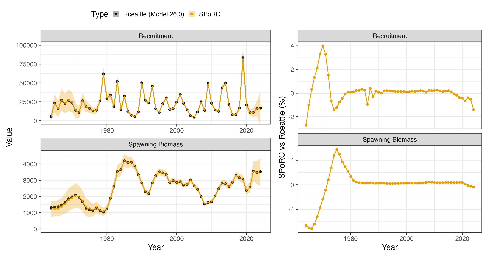
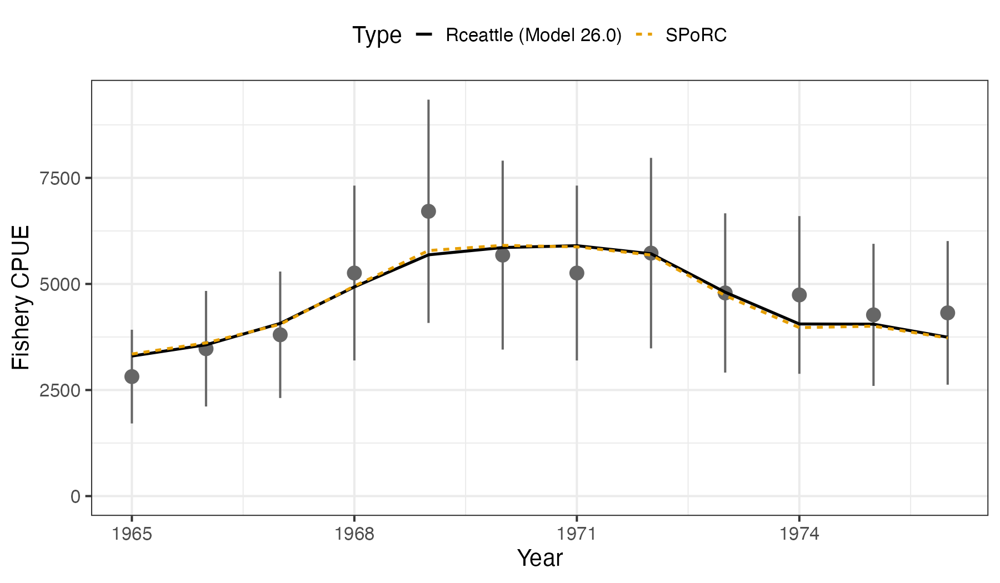
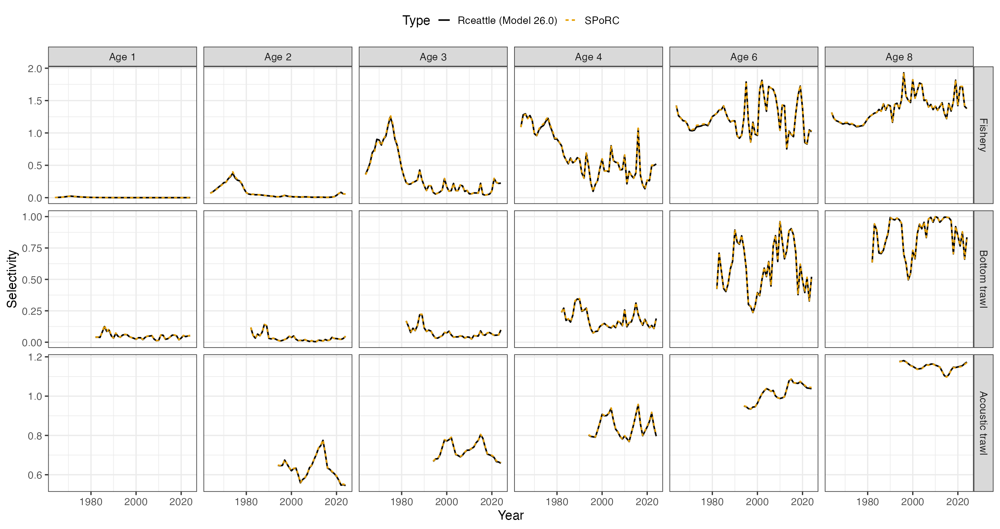

Eastern Bering Sea Walleye Pollock (Rceattle bridge)
Source:vignettes/f_single_region_ebs_pollock_case_study.Rmd
f_single_region_ebs_pollock_case_study.RmdOverview
Disclaimer: this case study is a demonstration of how an existing
assessment can be set up in SPoRC. It is not an official
stock assessment and should not be used for management advice. Please
refer to the assessment document for official results.
In this vignette, we will demonstrate how the base model of the 2026
eastern Bering Sea (EBS) walleye pollock assessment (Model 26.0; Ianelli
et al. 2026) can be set up in SPoRC, and compare model
outputs from SPoRC to the same model fit in
Rceattle (Adams et al. 2022), the age-structured framework
the assessment moved to in 2026. We use the September 2026 version of
Model 26.0, whose input file is public, with data from 1964 to 2024. The
stock is assessed as a single region with one sex, ages 1 to 15 (with a
plus group), one fishery, and four survey indices, together with an
early fishery CPUE.
| Data source | Years | Observations | Likelihood |
|---|---|---|---|
| Catch | 1964 to 2024 | 61 | Lognormal, standard deviation 0.05 |
| Fishery CPUE | 1965 to 1976 | 12 | Normal |
| Fishery age compositions | 1964 to 2023 | 60 | Multinomial |
| Bottom trawl survey (July) | 1982 to 2024 | 42 indices, 42 years of ages | Multivariate normal, multinomial |
| Acoustic trawl survey (July) | 1994 to 2024 | 19 indices, 18 years of ages | Lognormal, multinomial |
| Acoustic vessels of opportunity | 2006 to 2024 | 18 | Normal |
| Acoustic trawl survey, age 1 numbers | 1994 to 2022 | 18 | Lognormal |
There are a couple of features in this model that are worth noting
before we set it up. First, every fleet has selectivity that changes
from year to year. The fishery and the acoustic survey have a
non-parametric curve that follows a random walk, and the bottom trawl
survey has a logistic curve whose age at 50% selectivity and slope are
estimated in every year, with a value of its own at age 1. These curves
are constrained by penalties on their shape and on how much they change
between years, and most of the setup below is about reproducing those.
Second, the bottom trawl index is fit with a full covariance matrix and
its catchability is solved for rather than estimated. Lastly, the
fishery CPUE is predicted from the numbers at the start of the year in
Rceattle, whereas SPoRC predicts a fishery
index from the average numbers available over the year. Along with the
form of the bottom trawl age 1 selectivity, this is the only part of the
model that we do not reproduce exactly.
Note that the acoustic age 1 numbers are fit as their own index, with
their own catchability, separately from the acoustic biomass index and
its age compositions. SPoRC attaches one index to one
survey fleet, so this index is a fourth survey fleet that shares the
acoustic selectivity and is restricted to age 1.
First, let us load in any necessary packages and data. The data
object holds the model inputs (inputs) and the
Rceattle estimates (rceattle), which we use to
start the model and to compare against.
Model dimensions
To initially set the model up, we use Setup_Mod_Dim,
where we specify the years and ages modeled, as well as the number of
regions, sexes, fishery fleets, and survey fleets. The four survey
fleets are the bottom trawl survey, the acoustic trawl survey, the
acoustic vessels of opportunity, and the acoustic age 1 index. We also
turn off bias correction of the recruitment and initial age deviations,
since Rceattle was fit without it.
input_list <- Setup_Mod_Dim(years = years, # vector of years (1964 - 2024)
ages = inputs$ages, # vector of ages
lens = NA, # no lengths
n_regions = 1, # number of regions
n_sexes = 1, # number of sexes
n_fish_fleets = 1, # number of fishery fleets
n_srv_fleets = n_srv, # number of survey fleets == 1 bottom trawl, == 2 acoustic trawl, == 3 vessel of opportunity, == 4 acoustic age 1
bias_correct_pe = "none", # no bias correction in rceattle
verbose = FALSE
)Recruitment
Following the initialization of input_list, we can pass
the created object into Setup_Mod_Rec to parameterize
recruitment dynamics. In the case of EBS pollock, recruitment is
parameterized as such:
- Mean recruitment, with no stock recruitment relationship assumed,
- Recruitment deviations are estimated for all years, with no bias ramp and a fixed standard deviation of 1,
- The initial age structure is a geometric series from mean recruitment under natural mortality alone, with an initial age deviation estimated for every age including the plus group, and
- Spawning takes place in March.
input_list <- Setup_Mod_Rec(input_list = input_list, # input data list from above
rec_model = "mean_rec", # recruitment model
sigmaR_spec = "fix", # fix sigmaR
ln_sigmaR = array(log(1), dim = c(2, 1, 1)), # sigmaR of 1 for initial ages and recruitment
sigmaR_switch = 1, # one sigmaR for all years
do_rec_bias_ramp = 0, # no bias ramp
init_age_strc = 1, # geometric series to derive initial age structure
equil_init_age_strc = 2, # initial deviations on every age including the plus group
ln_global_R0 = rce$ln_R0, # mean recruitment
t_spawn = 3 / 12 # spawn in march
)Biological dynamics
Weight at age is fixed and changes by year, with separate weights for
spawning biomass, the catch, and each survey index. The acoustic age 1
index is in numbers, so its weights are not used. Maturity is fixed and
constant over time, and SPoRC takes half of the spawning
biomass of a one sex model as female. Natural mortality is fixed at 0.9
for age 1, 0.45 for age 2, and 0.3 for older ages.
input_list <- Setup_Mod_Biologicals(input_list = input_list,
WAA = inputs$WAA, # spawning weight at age
WAA_fish = inputs$WAA_fish, # fishery weight at age
WAA_srv = inputs$WAA_srv, # survey weight at age
MatAA = inputs$MatAA, # maturity at age
fit_lengths = 0, # no lengths
M_spec = "fix", # fix natural mortality
Fixed_natmort = inputs$Fixed_natmort # natural mortality at age
)Movement and tagging
This is a single region model, so there is no movement and no tagging data.
input_list <- Setup_Mod_Movement(input_list = input_list,
use_fixed_movement = 1,
Fixed_Movement = NA,
do_recruits_move = 0
)
input_list <- Setup_Mod_Tagging(input_list = input_list, use_conv_fish_tagging = 0)Catch and fishing mortality
The catch (thousand tons) is fit with a lognormal standard deviation
of 0.05. Rceattle estimates log fishing mortality in each
year with no penalty, so we fix the mean of log fishing mortality at
zero and leave the annual deviations free, which together are the log
fishing mortality of each year.
input_list <- Setup_Mod_Catch_and_F(input_list = input_list,
ObsCatch = inputs$ObsCatch, # catch in thousand tons
UseCatch = inputs$UseCatch,
Use_F_pen = 0, # no F penalty
ln_F_mean_spec = "fix", # no mean F, so the deviations are log F
sigmaC_spec = "fix", # fix catch sd
ln_sigmaC = array(log(0.05), dim = c(1, n_yrs, 1, 1)) # catch sd of 0.05
)Fishery indices and compositions
The fishery CPUE covers 1965 to 1976 and is fit as biomass with a
normal likelihood on the arithmetic scale. A fishery index in
SPoRC is predicted from the average numbers available over
the year, times fishery selectivity, fishery weight at age, and
catchability. Rceattle instead treats the CPUE as a survey
at the start of the year with the fishery’s selectivity, so it is
predicted from the numbers before any mortality takes place. We come
back to this difference when comparing the two models. Fishery age
compositions are multinomial.
input_list <- Setup_Mod_FishIdx_and_Comps(input_list = input_list,
ObsFishIdx = inputs$ObsFishIdx, # fishery cpue, 1965 - 1976
ObsFishIdx_SE = inputs$ObsFishIdx_SE, # standard error
UseFishIdx = inputs$UseFishIdx,
ObsFishAgeComps = inputs$ObsFishAgeComps,
UseFishAgeComps = inputs$UseFishAgeComps,
ISS_FishAgeComps = inputs$ISS_FishAgeComps,
ObsFishLenComps = array(NA, dim = c(1, n_yrs, 1, 1, 1, 1)),
UseFishLenComps = array(0, dim = c(1, n_yrs, 1, 1)),
ISS_FishLenComps = array(0, dim = c(1, n_yrs, 1, 1, 1)),
fish_idx_type = "biom", # biomass
FishIdx_LikeType = "normal", # normal likelihood
FishAgeComps_LikeType = "Multinomial",
FishLenComps_LikeType = "none",
FishAgeComps_Type = "agg_Year_1-terminal_Fleet_1",
FishLenComps_Type = "none_Year_1-terminal_Fleet_1"
)Survey indices and compositions
Each survey index has its own error structure. The bottom trawl index
is fit with a multivariate normal likelihood on the arithmetic scale,
with the covariance matrix of the survey estimates supplied in
SrvIdx_Cov. The acoustic trawl index and the age 1 index
are lognormal, and the vessel of opportunity index is normal. The bottom
trawl and acoustic trawl surveys take place in July, and the vessel of
opportunity index is predicted from the numbers at the start of the
year.
Rceattle sets the acoustic selectivity at age 1 to zero,
so the acoustic biomass index, the vessel of opportunity index, and the
acoustic age compositions are all of ages 2 to 15. Here,
srv_idx_ages restricts those indices to ages 2 to 15, and
SrvAgeComps_bins fits the acoustic compositions over the
same ages, so that the acoustic selectivity at age 1 is never used.
srv_idx_ages also restricts the fourth fleet to age 1,
which makes it the age 1 index.
input_list <- Setup_Mod_SrvIdx_and_Comps(input_list = input_list,
ObsSrvIdx = inputs$ObsSrvIdx,
ObsSrvIdx_SE = inputs$ObsSrvIdx_SE,
UseSrvIdx = inputs$UseSrvIdx,
ObsSrvAgeComps = inputs$ObsSrvAgeComps,
UseSrvAgeComps = inputs$UseSrvAgeComps,
ISS_SrvAgeComps = inputs$ISS_SrvAgeComps,
ObsSrvLenComps = array(NA, dim = c(1, n_yrs, 1, 1, 1, n_srv)),
UseSrvLenComps = array(0, dim = c(1, n_yrs, 1, n_srv)),
ISS_SrvLenComps = array(0, dim = c(1, n_yrs, 1, 1, n_srv)),
srv_idx_type = c("biom", "biom", "biom", "abd"), # biomass, and abundance for the age 1 index
srv_idx_ages = list(NULL, 2:15, 2:15, 1), # acoustic indices at ages 2 - 15, age 1 index at age 1
SrvIdx_LikeType = c("mvn", "lognormal", "normal", "lognormal"), # bottom trawl is multivariate normal
SrvIdx_Cov = list(inputs$SrvIdx_Cov, NULL, NULL, NULL), # bottom trawl covariance
SrvAgeComps_LikeType = c("Multinomial", "Multinomial", "none", "none"),
SrvLenComps_LikeType = c("none", "none", "none", "none"),
SrvAgeComps_Type = c("agg_Year_1-terminal_Fleet_1", "agg_Year_1-terminal_Fleet_2",
"none_Year_1-terminal_Fleet_3", "none_Year_1-terminal_Fleet_4"),
SrvLenComps_Type = c("none_Year_1-terminal_Fleet_1", "none_Year_1-terminal_Fleet_2",
"none_Year_1-terminal_Fleet_3", "none_Year_1-terminal_Fleet_4"),
SrvAgeComps_bins = list(NULL, 2:15, NULL, NULL) # acoustic ages 2 - 15
)Fishery selectivity and catchability
Fishery selectivity is non-parametric on the log scale, with one
coefficient for each age up to age 11 and one shared by ages 12 to 15,
and it follows a random walk over years with a standard deviation of
0.5. The walk starts at zero under the same standard deviation
(fishsel_rw_init_sigma = NA), so that every annual change
is penalized equally.
In Rceattle, the base coefficients that the walk starts
from are fixed under a random walk, and the change in the first year
(1964) from that base is penalized with a weight of 1. Here, the
coefficients are the 1964 curve, so we put a normal prior on them,
centered on the Rceattle base with a standard deviation of
,
which is the same penalty. Catchability of the fishery CPUE is
estimated.
fish_selex_prior <- data.frame(region = 1,
fleet = 1,
block = 1,
sex = 1,
par = 1:12, # one coefficient per age to 11, and one for 12 - 15
mu = exp(rce$fish_sel_coff), # rceattle base, on the natural scale
sd = 1 / sqrt(2)
)
input_list <- Setup_Mod_Fishsel_and_Q(input_list = input_list,
fish_sel_model = "nonparlog_Fleet_1", # non-parametric on the log scale
cont_tv_fish_sel = "rw_Fleet_1", # random walk
fish_sel_blocks = "none_Fleet_1",
fish_q_blocks = "none_Fleet_1",
fish_fixed_sel_pars_spec = "est_all",
fish_q_spec = "est_all",
fishsel_pe_pars_spec = "fix", # fix random walk sd
fish_sel_devs_spec = "est_all",
fishsel_rw_init_sigma = NA, # walk starts at zero
fish_sel_nonpar_est_bins = list(list(list(1, 2, 3, 4, 5, 6, 7, 8, 9, 10, 11, 12:15))), # ages 12 - 15 share one coefficient
fishsel_devs_shared_bins = list(1, 2, 3, 4, 5, 6, 7, 8, 9, 10, 11, 12:15),
Use_fish_selex_prior = 1,
fish_selex_prior = fish_selex_prior
)Survey selectivity and catchability
The bottom trawl survey is logistic, where the age at 50% selectivity
and the slope are estimated in every year from 1982. In
Rceattle, these are a base value with an annual deviation,
and the deviations are constrained only by a penalty on the change in
the curve between years (set in the weighting section below). Here, the
annual deviations (cont_tv_srv_sel = "iid") hold the whole
curve, and the base pair is kept at zero in the mapping below. The value
at age 1 is estimated separately in each year
(srv_sel_bin_dev_bins), and follows a random walk.
The acoustic trawl survey is non-parametric on the log scale, with coefficients for ages 2 to 8 and ages 9 to 15 following age 8, and follows a random walk from 1995. The vessel of opportunity index shares the acoustic selectivity, and so does the age 1 index, which only reads age 1 and so needs no selectivity of its own.
In Rceattle, the survey selectivity deviations are only
constrained by penalties on the shape of the curve and on its change
between years, which we set in the weighting section below.
srvsel_pe_wt = 0 turns off the process error likelihood
that SPoRC would otherwise give these deviations, so they
enter the objective only through the data and those penalties.
Catchability of the bottom trawl survey is solved for as the ratio of
the mean observed to the mean predicted index ("arith"),
and catchability of the age 1 index as the geometric mean of their ratio
("geo"). Catchability of the other two indices is
estimated.
input_list <- Setup_Mod_Srvsel_and_Q(input_list = input_list,
srv_sel_model = c("logist1_Fleet_1", "nonparlog_Fleet_2", "nonparlog_Fleet_3", "logist1_Fleet_4"),
cont_tv_srv_sel = c("iid_Fleet_1", "rw_Fleet_2", "rw_Fleet_3", "none_Fleet_4"),
srv_sel_blocks = c("none_Fleet_1", "none_Fleet_2", "none_Fleet_3", "none_Fleet_4"),
srv_q_blocks = c("none_Fleet_1", "none_Fleet_2", "none_Fleet_3", "none_Fleet_4"),
srv_fixed_sel_pars_spec = c("est_all", "est_all", "est_shared_f_2", "fix"), # vessel of opportunity shares acoustic selectivity
srv_sel_devs_spec = c("est_all", "est_all", "est_shared_f_2", "fix"),
srvsel_pe_pars_spec = c("fix", "fix", "fix", "fix"),
srvsel_pe_wt = c(0, 0, 0, 0), # survey deviations only enter through the penalties
srv_q_spec = c("est_all", "est_all", "est_all", "est_all"),
srv_q_type = c("arith", "est", "est", "geo"), # solved for the bottom trawl and age 1 index
srv_sel_nonpar_est_bins = list(NULL,
list(list(1, 2, 3, 4, 5, 6, 7, 8:15)),
list(list(1:2, 3, 4, 5, 6, 7, 8:15)),
NULL), # acoustic ages 2 - 8, and 9 - 15 follow age 8
srvsel_devs_shared_bins = list(1, 2, 3, 4, 5, 6, 7, 8:15),
srv_sel_bin_dev_bins = list(1, NULL, NULL, NULL), # bottom trawl age 1 is its own annual value
cont_tv_srvsel_bin_devs = c("rw", "none", "none", "none"),
t_srv = array(c(0.5, 0.5, 0, 0.5), dim = c(1, 1, n_srv)) # july, july, start of year, july
)Weighting and selectivity penalties
All likelihood components are given a weight of 1, and there is no F
penalty. Rceattle adds
to the observed and predicted compositions, and nothing to the indices,
so we use the same constants here.
The selectivity penalties are the ones in the Rceattle
input file, each with its own weight:
- Fishery: declines in log selectivity from one age to the next are penalized at every age (weight 12.5), together with the curvature of log selectivity over age (weight 1/60), and the random walk has a standard deviation of 0.5,
- Bottom trawl: the change in log selectivity from one year to the next is penalized over ages 3 to 14 from 1983 (weight 2),
- Acoustic trawl: increases in log selectivity from one age to the next are penalized over ages 2 to 15 from 1994 (weight 1), together with its curvature over age (weight 1), and the random walk has a standard deviation of 0.138 from 1995.
SPoRC penalizes declines (smooth_dome) and
differences in either direction (smooth_bin_diff), but not
increases on their own. Since a difference in either direction is either
an increase or a decline, the acoustic penalty on increases is written
as a difference penalty with weight 1 and a decline penalty with weight
.
The vessel of opportunity index shares the acoustic curve, so it is not
penalized again.
fish_pen_wts <- list(smooth_dome = 12.5, # declines in log selectivity at every age
smooth_bin_curve = rep(1 / 60, n_yrs), # curvature
smooth_yr_diff = c(0, rep(1 / (2 * 0.5^2), n_yrs - 1)), # random walk sd of 0.5
normalize = FALSE
)
bts_rw <- as.numeric(years >= 1983) * 2 # bottom trawl year to year change, ages 3 - 14
ats_shape <- as.numeric(years >= 1994) # acoustic increases over ages 2 - 15
ats_curve <- as.numeric(years >= 1995) # acoustic curvature
ats_rw <- as.numeric(years >= 1995) / (2 * 0.138^2) # acoustic random walk sd of 0.138
srv_pen_wts <- list(list(smooth_yr_diff = bts_rw, normalize = FALSE,
bin_range = list(smooth_yr_diff = c(3, 14))), # bottom trawl
list(smooth_bin_diff = ats_shape, smooth_dome = -ats_shape, smooth_bin_curve = ats_curve,
smooth_yr_diff = ats_rw, normalize = FALSE,
bin_range = list(smooth_bin_diff = c(2, 15), smooth_dome = c(2, 15))), # acoustic trawl
list(), # vessel of opportunity shares the acoustic curve
list() # acoustic age 1
)
input_list <- Setup_Mod_Weighting(input_list = input_list,
addtocomp = 1e-3, # constant added to compositions
addtosrvidx = 0, # nothing added to the indices
addtofishidx = 0,
fish_sel_pen_wts = fish_pen_wts,
srv_sel_pen_wts = srv_pen_wts,
Wt_Catch = 1,
Wt_FishIdx = 1,
Wt_SrvIdx = 1,
Wt_Rec = 1,
Wt_Init_Rec = 1,
Wt_F = 0,
Wt_Tagging = 0
)Mapping
Lastly, we set which selectivity deviations are estimated.
SPoRC writes the selectivity deviations as levels (the
total change since the first year), while Rceattle writes
them as annual changes. The two are the same model, but the first year’s
level is the same as the base coefficients, so it is kept at zero, and
the ages that share a coefficient must also share their deviations. The
bottom trawl deviations start in 1982 with the survey, the fishery
deviations start in 1965, and the acoustic deviations start in 1995. The
vessel of opportunity index uses the same acoustic deviations, not only
the same coefficients. The maps are also passed into the data list
(map_ln_*), which the penalties read to tell which
deviations are estimated.
# bottom trawl deviations from 1982
map_srvdev <- array(as.numeric(input_list$map$ln_srvsel_devs), dim = dim(input_list$par$ln_srvsel_devs)) # region, year, par, sex, fleet
map_srvdev[1,years < 1982,,1,1] <- NA
# acoustic deviations at ages 2 - 8 every year from 1995, and the vessel of opportunity shares them
map_srvdev[1,,,1,2:3] <- NA
k <- max(map_srvdev, na.rm = TRUE) + 1
for(y in which(years >= 1995)) {
for(g in list(2, 3, 4, 5, 6, 7, 8:15)) {
map_srvdev[1,y,g,1,2] <- k
k <- k + 1
} # end g loop
} # end y loop
map_srvdev[1,,,1,3] <- map_srvdev[1,,,1,2]
input_list$map$ln_srvsel_devs <- factor(map_srvdev)
input_list$data$map_ln_srvsel_devs <- map_srvdev
# fishery deviations every year from 1965, ages 12 - 15 move together
map_fishdev <- array(NA, dim = dim(input_list$par$ln_fishsel_devs)) # region, year, bin, sex, fleet
k <- 1
for(y in 2:n_yrs) {
for(g in list(1, 2, 3, 4, 5, 6, 7, 8, 9, 10, 11, 12:15)) {
map_fishdev[1,y,g,1,1] <- k
k <- k + 1
} # end g loop
} # end y loop
input_list$map$ln_fishsel_devs <- factor(map_fishdev)
input_list$data$map_ln_fishsel_devs <- map_fishdev
# acoustic age 1 kept at zero, and no base logistic pair for the bottom trawl
map_srvpar <- array(as.numeric(input_list$map$srv_fixed_sel_pars), dim = dim(input_list$par$srv_fixed_sel_pars)) # region, par, block, sex, fleet
map_srvpar[1,1,1,1,2:3] <- NA
map_srvpar[1,1:2,1,1,1] <- NA
input_list$map$srv_fixed_sel_pars <- factor(map_srvpar)
# bottom trawl age 1 from 1982, with a fixed random walk sd
map_bindev <- array(as.numeric(input_list$map$ln_srvsel_bin_devs), dim = dim(input_list$par$ln_srvsel_bin_devs))
map_bindev[1,years < 1982,,1,1] <- NA
input_list$map$ln_srvsel_bin_devs <- factor(map_bindev)
input_list$data$map_ln_srvsel_bin_devs <- map_bindev
input_list$map$srvsel_bin_devs_pe_pars <- factor(rep(NA, length(input_list$par$srvsel_bin_devs_pe_pars)))This leaves us with 1218 estimated parameters.
Differences from Rceattle
| Part of the model | In Rceattle
|
Here |
|---|---|---|
| Fishery CPUE | Numbers at the start of the year, with fishery selectivity | Average numbers available over the year |
| Bottom trawl selectivity at age 1 | Log selectivity is a base value times the exponential of an annual deviation, and the change in the deviation between years is penalized with a weight of 8 | Log selectivity is the annual value itself, and its change between
years is penalized with a weight of 8 divided by the square of the
Rceattle base value |
| Acoustic selectivity at age 1 | Set to zero | Not used, since the acoustic indices and compositions are of ages 2 to 15 |
The second difference needs a short explanation. In
Rceattle, log selectivity at age 1 is
,
where
is a base value (about
)
and
is the annual deviation, and the penalty is
.
A change in
is a proportional change in log selectivity, so the same change in log
selectivity is penalized less when age 1 selectivity is small than when
it is large. Here, the penalty is on the change in log selectivity
itself, with its weight set so that the two penalties agree when log
selectivity is at the base value.
Starting at the Rceattle estimate
We start the fit at the Rceattle estimate, which
shortens the fit and lets us check the setup before optimizing. Most
values move across directly. The fishery coefficients are the base plus
the 1964 change, and the fishery deviations are the running sum of the
later changes. The acoustic deviations are set from the
Rceattle selectivity in each year, relative to 1994.
Rceattle evaluates the bottom trawl logistic at the middle
of each age (age + 0.5), so the age at 50% selectivity is shifted down
by 0.5 here.
# recruitment, initial age structure and fishing mortality
input_list$par$ln_RecDevs[1,1,] <- rce$rec_dev
input_list$par$ln_InitDevs[1,1,,1] <- rce$init_dev
input_list$par$ln_F_devs[1,,1,1] <- rce$log_F
# fishery: the base plus the first year's change, then the running sum of the later changes
bin_f <- c(1:12, 12, 12, 12) # bin of each age
input_list$par$fish_fixed_sel_pars[1,,1,1,1] <- (rce$fish_sel_coff + rce$fish_sel_coff_dev[1,])[bin_f]
input_list$par$ln_fishsel_devs[1,2:n_yrs,,1,1] <- apply(rce$fish_sel_coff_dev[-1,], 2, cumsum)[,bin_f]
input_list$par$fishsel_pe_pars[1,,1,1] <- log(1 / sqrt(2)) # sum of squares of the changes
# acoustic: log selectivity relative to age 1, where age 1 before it is set to zero is 15 less the sum of ages 2 - 15
log_sel_ats <- log(cbind(n_ages - rowSums(rce$ats_sel[,2:n_ages]), rce$ats_sel[,2:n_ages]))
log_sel_ats <- log_sel_ats - log_sel_ats[,1]
y_94 <- which(years == 1994)
for(f in 2:3) {
input_list$par$srv_fixed_sel_pars[1,,1,1,f] <- log_sel_ats[y_94,]
for(y in which(years > 1994)) input_list$par$ln_srvsel_devs[1,y,,1,f] <- log_sel_ats[y,] - log_sel_ats[y_94,]
} # end f loop
# bottom trawl: logistic at age + 0.5 with a multiplicative a50 deviation, so a50 - 0.5 here
input_list$par$srv_fixed_sel_pars[1,1:2,1,1,1] <- 0
input_list$par$ln_srvsel_devs[1,,1,1,1] <- log(rce$bts_a50 * exp(rce$bts_a50_dev) - 0.5)
input_list$par$ln_srvsel_devs[1,,2,1,1] <- rce$bts_log_slope + rce$bts_log_slope_dev
# bottom trawl age 1: log selectivity is b1 * exp(dev) in rceattle
input_list$par$ln_srvsel_bin_devs[1,,1,1,1] <- rce$bts_age1 * exp(rce$bts_age1_dev)
input_list$par$srvsel_bin_devs_pe_pars[1,,1,1] <- log(abs(rce$bts_age1) / 4) # weight of 8 / b1^2
# catchability
input_list$par$ln_srv_q[1,,2] <- rce$log_q["ats"]
input_list$par$ln_srv_q[1,,3] <- rce$log_q["avo"]
input_list$par$ln_fish_q[1,,1] <- rce$log_q["cpue"]Evaluated at the Rceattle estimate without optimizing,
numbers at age, spawning biomass, recruitment, and the fishery, bottom
trawl, and acoustic selectivity all agree with Rceattle,
and so do the catch, recruitment, initial age, and composition
likelihoods. The gradient of the objective is zero there for the survey
selectivity and catchability parameters, and is not zero only for the
parameters that the fishery CPUE and the bottom trawl age 1 penalty
reach. Predicted from the average numbers over the year, the fishery
CPUE is lower than when predicted from the numbers at the start of the
year, which catchability takes up, but it also falls more over 1965 to
1976, as fishing mortality increases.
As a check, we also refit the model in a development copy of
SPoRC, with the fishery CPUE predicted from the numbers at
the start of the year and the Rceattle form of the bottom
trawl age 1 selectivity. That fit lands on the Rceattle
estimate, with spawning biomass and recruitment within a thousandth of a
percent in every year, so these two are the only differences between the
models.
Fitting and comparison
We then fit the model with two Newton steps, and get standard errors
with sdreport.
ebs_pollock_model <- fit_model(input_list$data,
input_list$par,
input_list$map,
newton_loops = 2,
silent = TRUE
)
ebs_pollock_model$sdrep <- RTMB::sdreport(ebs_pollock_model)The fit converges with a negligible gradient and a positive definite
Hessian. The table below shows the largest differences in spawning
biomass and recruitment from Rceattle.
| Quantity | All years | 1980 to 1999 | 2000 to 2024 |
|---|---|---|---|
| Spawning biomass | 7.2% (1966) | 1.4% | 0.4% |
| Recruitment | 4.0% (1970) | 1.0% | 1.4% |

Most of the difference is before 1980 and comes from the fishery
CPUE. Since the CPUE predicted from the average numbers over the year
falls more than one predicted from the start of the year,
SPoRC fits the same observations with a population that is
lower in the 1960s and higher by the mid 1970s. Both models fit the CPUE
about as well. The smaller differences after 2000 come mostly from the
bottom trawl age 1 selectivity, which informs the size of the most
recent year classes.

Selectivity is close to the Rceattle estimate for all
three fleets, in every year. Note that fishery and acoustic selectivity
are scaled so that their mean over ages is 1 in each year (for the
acoustic survey, before age 1 is set to zero), so they can be above
1.

References
Adams, G. D., Holsman, K. K., Barbeaux, S. J., Dorn, M. W., Ianelli, J. N., Spies, I., Stewart, I. J., Punt, A. E. 2022. An ensemble approach to understand predation mortality for groundfish in the Gulf of Alaska. Fisheries Research 251: 106303.
Ianelli, J., Wassermann, S., McCarthy, A., McGilliard, C., Siddon, E., Shotwell, K., Adams, G., Lauffenburger, N. 2026. 2026 Assessment of Eastern Bering Sea Walleye Pollock. North Pacific Fishery Management Council, Anchorage, AK.